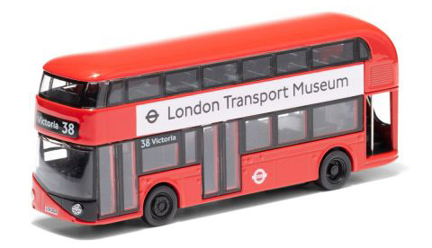

A story of Anne
story o1


Today is Friday.
Looking out of the window, the weather does not seem particularly pleasant. next ∇
Looking out of the window, the weather does not seem particularly pleasant. next ∇
The sky is white, as if filled with white smoke, without a single cloud. Actually, it is more like white with about 5% grey mixed in.
Usually, I enjoy going to the park on sunny days when the sun is shining brightly, but going on a cloudy day isn't too bad either. There are many parks in London, but today I decided to go to Hyde Park. next ∇
I wore a white T-shirt with dark grey jeans.
I also brought my film camera and my favourite ______ with me.
What is Anne's favourite item to bring when she goes to the park? Through various stories, you can infer what it might be.
I think the alphabet signs at the top of the bus stops are a really good system to prevent confusion about directions. Before coming to London, I used to occasionally take buses in the opposite direction. It would be great if we had this system in our country too.
next ∇I took the number 94 bus. Most buses in London have two floors, and I always sit by the window on the second floor. next ∇

Because,
I
love
the street view
from the second floor.
From there,
I can see the top front view of tall trees,
not the low angle.
I like this cropped view by window, fully filled with the branches and leaves. It creates a beautiful,
lively pattern
against the blue sky.
While gazing the view outside,
I got off
at Queensway Station
(Stop A) bus stop.